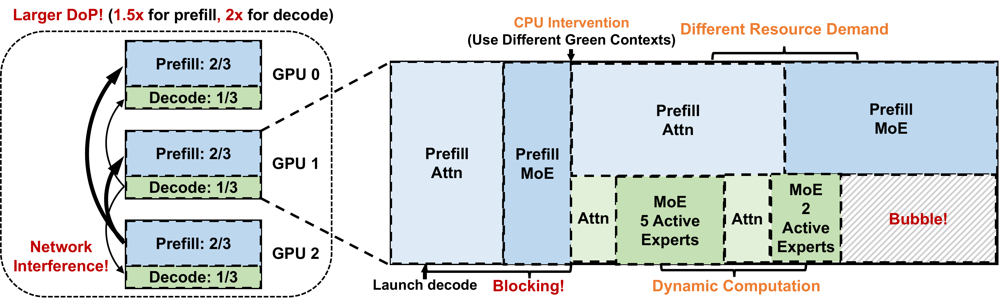
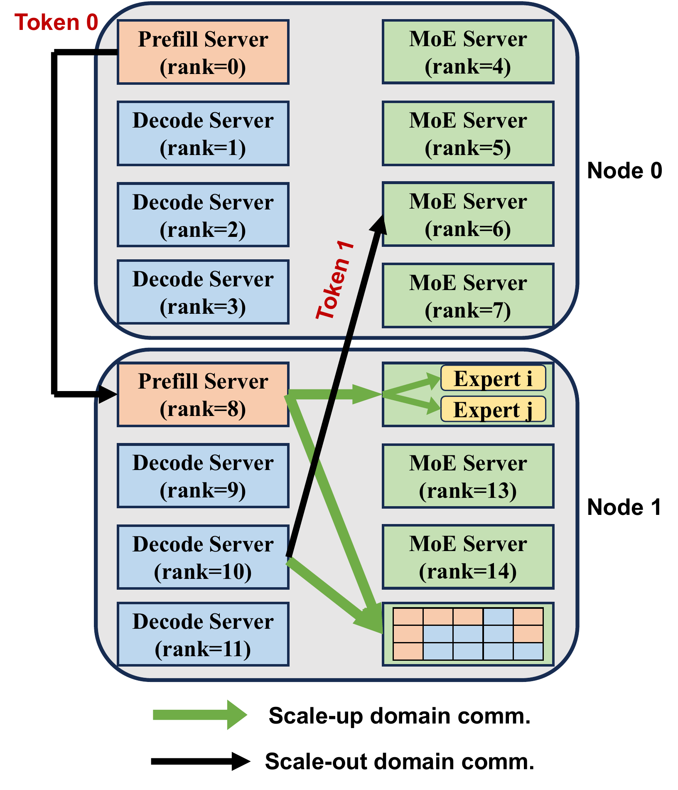
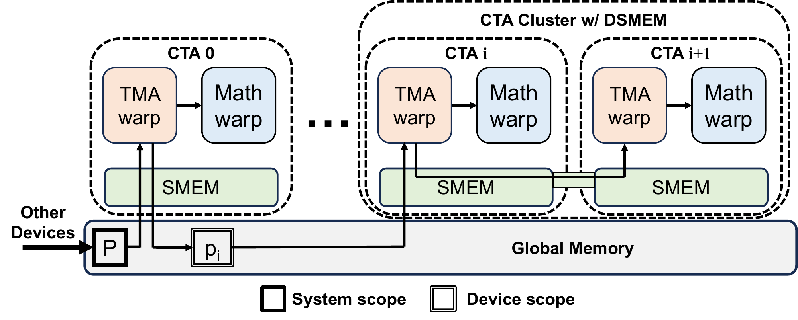
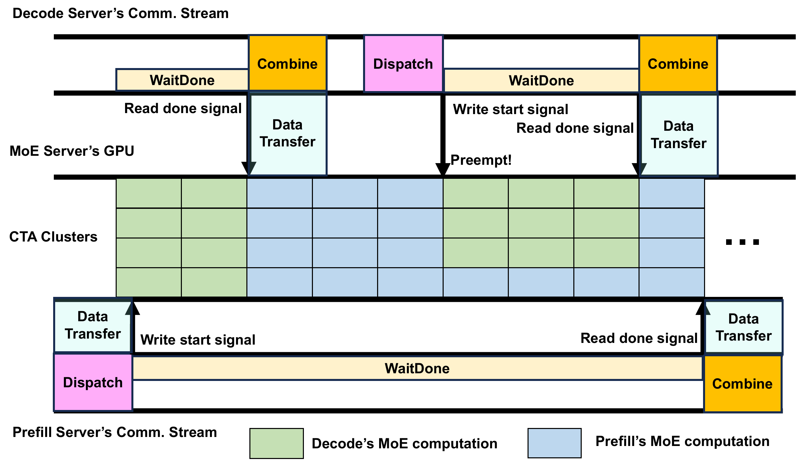
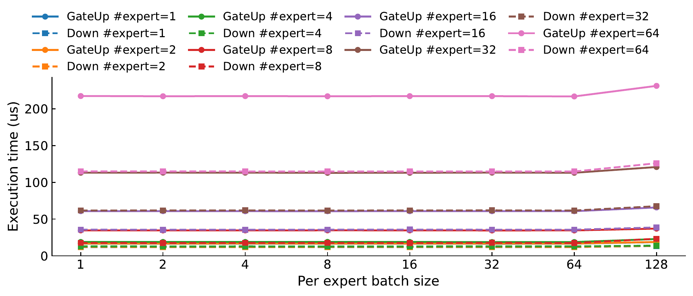
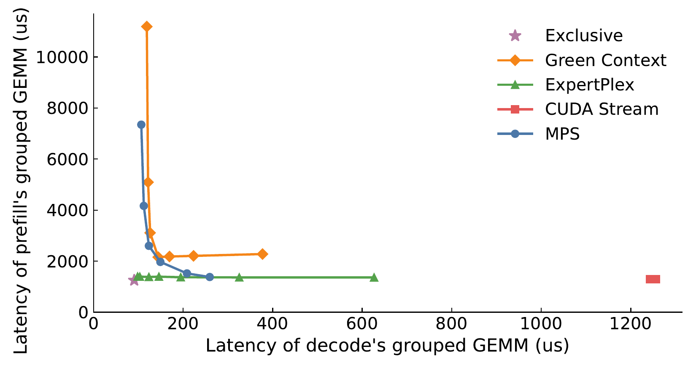

论文：ExpertPlex: A High-Goodput Disaggregated Serving System for MoE LLMs with Adaptive Persistent Kernels
作者：Bingyang Wu、Chao Jin、Zili Zhang、Xinming Wei、Yinmin Zhong、Ruidong Zhu、Xin Jin（北京大学）；Chengxu Yang、Yuliang Liu（Independent Researcher）
发表：arXiv 预印本，2026 年，v2（2026-07-21 修订）
代码：论文未提供公开仓库；实现基于 DeepGEMM、DeepEP v1 与 SGLang 修改
MoE 大模型把参数量堆到几千亿，但服务它的系统卡在两个死结上：把 prefill 和 decode 分到不同 GPU 上，副本太贵、配比太粗；让两者共享一张卡，资源切分又太死、挡不住动态负载。ExpertPlex 的回答是——跨阶段共享同一份 MoE 专家，却把 attention 各自独占整卡，再用一个能在微秒级 tile 边界上切换的自适应常驻 kernel（Adaptive Persistent Kernel，APK）管住共享，配合 attention 侧发起的一侧通信去掉跨阶段耦合。结果是 MoE 大模型的有效吞吐（goodput）做到 PD 分离的 2 倍。
为什么现有的 PD 分离和 PD 合设都治不好 MoE 大模型的服务效率？
PD 分离用整副本换隔离：MoE 专家权重占参数 95% 以上，模型越大单个实例的最小 GPU 数越高，部署单元动辄几十上百块 GPU，副本贵、弹性差、故障域大。PD 合设用固定切分换去重：Green Context 的 SM 分区在 kernel 运行期间不能重新划分，追不上 MoE 沿激活专家数、attention/MoE 需求差、通信-计算瓶颈漂移三个维度的动态负载，产生队头阻塞与资源气泡。完整论证见「1. 两条现有路线，各自的死结」。
ExpertPlex 的「共享专家 + 分离注意力」架构为什么能同时避开两条路线的死结？
MoE 权重占 95% 以上、attention 不足 5%。跨阶段共享同一份 MoE 专家，消除大头的冗余，部署粒度从此与 MoE 权重解耦、以单 GPU 为单位；attention 按阶段独占整卡，每个阶段保留完整本地算力，不用在 GPU 内部切分，还消除 attention 侧跨阶段网络干扰。共享不是无管理混跑：隔离性由 APK 的微秒级调度与通信侧的路径和优先级隔离保证。完整论证见「2. ExpertPlex 的架构：共享专家，分离注意力」与「3. APK：在 tile 边界上调度 GPU」。
APK 怎么做到既不被长 prefill kernel 阻塞 decode，又不浪费空闲 SM？
APK 以 tile 为调度单位：tile 边界每 2.2–25.3 微秒出现一次且与操作总长无关，抢占决策沿存储层级协作传播、cluster 一致切换，上界是一个 tile 加一次检查 epoch，因此 decode 不会被毫秒级 prefill kernel 阻塞。只有一个阶段就绪时用全部 CTA cluster，两阶段竞争时按 $q'$ 公式放大 decode 预算——空间复用与时间复用并存，空闲 SM 被另一阶段填满。完整论证见「3. APK：在 tile 边界上调度 GPU」。
attention 发起的一侧通信如何避免死锁与跨阶段网络干扰？
两侧通信要求收发双方都推进，两阶段并发时形成跨阶段等待环导致死锁。一侧通信把预分配的最终 dispatch/combine buffer 直接暴露给 attention 服务器，push 和 pull 都从 attention 侧发起，MoE 侧没有通信 kernel 也没有常驻轮询 SM，等待环被消除。网络干扰靠分层 prefill 路径（scale-out 流量尽量走 prefill attention 服务器之间、节点内 NVLink 组播去重）与 InfiniBand 虚拟通道按优先级隔离。完整论证见「4. 通信：让 attention 侧发起一切」。
ExpertPlex 的 goodput 提升有多大，结论在什么条件下成立？
最优数字是 MiniMax-M2.7 + ShareGPT 上的 11.3 req/s/node：对 ChunkedPrefill 5.65×、对 Colocated 2.72×、对 PDD 2.01×、对 PDMux 1.41×；PD 合设口径下（GLM-5.1-FP8 + LooGLE）为 1.66×。成立条件：SGLang + DeepGEMM + DeepEP v1 栈、8×H800、至多 3 节点、四组 SLO 与 P90 goodput 口径；GLM + ShareGPT 上对 PDMux 持平是必须记住的反例。完整论证见「6. 实验：提升多少，在什么条件下成立」。
前置知识：MoE 推理与服务基础（prefill/decode、EP、goodput、PD 分离/合设）与 GPU 执行模型（SM/CTA/cluster、kernel、CUDA Graph、Green Context）。
先立一个贯穿全文的具体场景：一台 8 卡 H800 服务器跑 MiniMax-M2.7，来了一条 16K token 的长输入要 prefill，同时几十个已开始的请求正以每 50 毫秒一个 token 的速度 decode（这个 50ms 是 MiniMax-M2.7 在 ShareGPT 上的 TPOT SLO，见「6. 实验：提升多少，在什么条件下成立」的设置表）。论文实测，在 EP4（4 路专家并行）下这种模型的 decode 专家计算只要 17.7–34.7 微秒，而 16K token 的 prefill 专家计算要 1.8–2.9 毫秒——长 84–101 倍 [C5]。同一张 GPU 上，一个 2 毫秒的大活和一个 30 微秒的小活抢资源，这就是全部故事的起点。
服务 MoE 大模型，主流有两条路线。先看它们各自卡在哪里。
MoE 服务基础里讲过，prefill 是吞吐导向的（一次吃掉全部输入），decode 是延迟敏感的（一个一个吐 token）。prefill-decode 分离（PDD）把两阶段放到不同的 GPU 实例上，互不干扰 [C2]。
问题出在「每个实例必须持有一份完整模型副本」。MoE 模型的专家权重占参数的 95% 以上——DeepSeek-V4-Pro 是 95%、GLM-5.1-FP8 是 96%、MiniMax-M2.7 是 98% [C1]。这意味着随着模型变大，单个实例的最小 GPU 数也跟着涨，副本越来越贵，还会挤占本该给 KV cache 的显存。
更麻烦的是配比。PDD 要按两阶段的资源需求配一个 P:D 比例，而能实现这个比例的最小部署单元远大于单个实例。论文引用的已报道部署：一个 DeepSeek-V3 单元是 32 块 prefill GPU 加 320 块 decode GPU；另一个用 176 块 GPU 作为一个单元；Kimi-K2 部署在 128 块 H200 上 [C2]。
第一，小集群根本配不出这个比例，只能让某一阶段过载、另一阶段闲置。第二，大集群每扩容一步就是几百块 GPU 的粒度，追不上中等流量的波动。第三，分层通信把很多 rank 耦合成一个组，单个 rank 故障就可能拖垮整个单元，故障爆炸半径大、恢复难。所以 PDD 拿到隔离，付出的是显存效率、弹性和故障隔离 [C2]。
PD 合设（colocation）反过来：两阶段共享同一实例，省掉副本。为避免互相干扰，现有系统用 NVIDIA 的 Green Context 在一张卡里按阶段圈定各自的 SM [C3]。
Green Context 的限制在 GPU 执行模型页讲过：SM 分区在创建时固定，kernel 运行期间不能重新划分，要改得销毁重建 [C3]。但 MoE 的负载是动态的，沿三个维度变：第一，EP 下每层每张卡激活的专家数和 token 数都在变；第二，同一层里 attention 和 MoE 的资源需求不同；第三，一个 MoE 模块内部在 dispatch、专家计算、combine 之间切换，瓶颈在通信和计算之间漂移。固定切分追不上这些变化 [C3]。
看这张图，固定切分会产生两种失败模式：
下图展示 PD 合设在固定切分下的两种失败：prefill 占了太多 SM 时，就绪的 decode 被挡住（队头阻塞）；为 decode 留的 SM 没活干时，prefill 又用不上（资源气泡）。

图（原文 Figure 2）：左侧是 head-of-line blocking——一个不可抢占的长 prefill kernel 占着 SM，延迟敏感的 decode 只能等；右侧是 resource bubble——为 decode 预留的 SM 在它没就绪工作时闲置，prefill 想用也用不上。论文给的数量级差距很关键：prefill kernel 能跑几十到几百毫秒，decode kernel 只要几百微秒，差好几个数量级 [C4]。把贯穿场景代进去：那个 2 毫秒的 prefill GEMM 如果挡住 decode，decode 要白白等 84–101 倍于自己执行的时间 [C5]。
合设还有个没解决的毛病：每张 GPU 都被切分，每个阶段拿到的本地资源更少，要达到同样的延迟目标就得用更宽的并行度，通信更多，而 prefill 和 decode 的 dispatch/combine 还挤在同一条网络上互相干扰 [C3]。
两条路线的死结可以一句话概括：PDD 用整副本换隔离，粒度随模型变粗；colocation 用固定切分换去重，追不上动态负载。ExpertPlex 要找的是第三条路。
用自己的话说 PDD 的部署单元为什么会随模型变大，并举出论文里的一个数字。
PDD 的每个实例必须持有一份完整模型副本，而 MoE 模型的专家权重占参数 95% 以上（DeepSeek-V4-Pro 95%、GLM-5.1-FP8 96%、MiniMax-M2.7 98%），模型越大，单个实例的最小 GPU 数越高，再按 P:D 配比组成部署单元，粒度随之变粗。论文引用的数字：一个 DeepSeek-V3 部署单元是 32 块 prefill GPU 加 320 块 decode GPU；Kimi-K2 部署在 128 块 H200 上。
Green Context 为什么追不上 MoE 的动态负载？列出负载变化的三个维度。
Green Context 的 SM 分区在创建时固定，kernel 运行期间不能重新划分，要改就得销毁重建。而 MoE 负载沿三个维度动态变化：EP 下每层每张卡激活的专家数和 token 数在变；同一层里 attention 和 MoE 的资源需求不同；一个 MoE 模块内部在 dispatch、专家计算、combine 之间切换，瓶颈在通信和计算之间漂移。固定切分对这三个维度都无响应。
贯穿场景里，固定切分下 decode 最坏要等 prefill 多少倍于自己的执行时间？
论文实测，EP4 下 MiniMax-M2.7 的 decode 专家计算只要 17.7–34.7 微秒，而 16K token 的 prefill 专家计算要 1.8–2.9 毫秒，长 84–101 倍。固定切分下不可抢占的长 prefill kernel 占着 SM 时，就绪的 decode 只能等完这段比自己长两个数量级的时间——这就是队头阻塞。
ExpertPlex 的中心决策建立在一个权重占比事实上：MoE 权重占参数 95% 以上，attention 权重不足 5% [C1][C6]。这给了第三条路的依据——
跨阶段共享同一份 MoE 专家，却把 attention 按阶段各自独占整卡 [C6]。共享专家直接消除了那份占 95%+ 的跨阶段冗余，还顺带把两阶段动态稀疏的专家计算复用进同一个池子——一个阶段在通信或没活时，另一个阶段的计算能填它的空泡。attention 只占不到 5%，按阶段分离成整 GPU，每个阶段保留完整本地算力，不用在 GPU 内部切分，从而降低每阶段的并行度、减少通信，还消除了 attention 侧的跨阶段网络干扰 [C6]。
这个边界很关键：部署粒度从此和 MoE 权重解耦——不再像 PDD 那样随模型变粗，而是以单 GPU 为单位匹配两阶段需求，弹性更细、故障域更小 [C6]。
看架构图：
下图把一个节点的 GPU 分成三类服务器：prefill attention、decode attention、共享的 MoE。

图（原文 Figure 3）：每个节点把一部分 GPU 分给 prefill 服务器、一部分给 decode 服务器、剩下的给 MoE 服务器（前两类可以为空）。prefill 和 decode 服务器各自跑自己的 attention 模块，MoE 服务器托管专家、为两个阶段执行专家计算 [C6]。attention 服务器和 MoE 服务器之间的数据通路，「3. APK：在 tile 边界上调度 GPU」和「4. 通信：让 attention 侧发起一切」会展开。
误解澄清：「共享专家就是没有隔离」是错的。共享不等于无管理混跑——「3. APK：在 tile 边界上调度 GPU」的 APK 会在微秒级 tile 边界上有界地抢占、按需重分配 SM，「4. 通信：让 attention 侧发起一切」的通信会按路径和优先级隔离流量。ExpertPlex 的共享是「带细粒度调度的共享」，隔离性由机制保证，不是靠物理副本。
但共享专家要成立，需要比现有机制更细的 GPU 控制。「3. APK：在 tile 边界上调度 GPU」讲 APK 怎么做到；「4. 通信：让 attention 侧发起一切」讲通信怎么去掉两阶段通过 MoE 池的耦合。
为什么共享专家能消除 95%+ 的冗余，而分离 attention 却不会让每阶段损失太多本地算力？用权重占比说清。
MoE 权重占参数 95% 以上，两阶段各持一份就是双份冗余，跨阶段共享直接消掉一份。attention 权重不足 5%，按阶段分离后每个阶段用整卡 GPU 跑自己的 attention 模块，本地算力完整保留，不需要在 GPU 内部切分——损失的是那不到 5% 的重复，换来的是并行度降低与跨阶段网络干扰消除。
ExpertPlex 的部署粒度和 PDD 的部署单元，关键区别在哪？
PDD 的部署单元被完整副本和 P:D 配比卡住，随模型变大而变粗，最小单元动辄几十上百块 GPU。ExpertPlex 共享 MoE 专家后，部署粒度与 MoE 权重解耦，以单 GPU 为单位匹配两阶段需求：弹性粒度更细，故障域也更小——单个 GPU 故障不再拖垮一个巨大单元。
节点的三类服务器分别承担什么？哪两类可以为空？
prefill 服务器跑 prefill 阶段的 attention 模块，decode 服务器跑 decode 阶段的 attention 模块，MoE 服务器托管共享专家并为两个阶段执行专家计算。prefill 服务器和 decode 服务器这两类可以为空——例如某节点把全部 GPU 都给 MoE 托管。
共享一张 MoE GPU，最怕的就是贯穿场景里那个 2 毫秒的 prefill GEMM 把 30 微秒的 decode GEMM 顶在后面。CUDA stream 优先级不能打断已运行的 kernel；Green Context 在 kernel 期间固定；MPS 不能在运行中的 kernel 内部按 tile 时间复用——这些机制在 GPU 执行模型页都对照过。APK 要补齐的是一个现有机制都缺的能力组合。
论文把需求列成五条 [C7]：
| 性质 | 为什么需要 |
|---|---|
| CUDA Graph 兼容 | 避免逐操作 CPU 介入，否则短 decode 路径被启动/同步开销吃掉 |
| 空间复用 | 不同 SM 子集同时跑两个阶段；一个阶段通信时把 SM 借给另一个阶段算 |
| 时间复用 | 同一 SM 在当前阶段没就绪工作时切到另一个阶段 |
| 有界抢占 | 长 prefill 操作不会造成严重队头阻塞 |
| 有界重分配 | 新就绪的阶段能快速收回 SM，避免气泡 |
逐个对照现有机制：API 拦截只有启动边界的时间复用，缺图兼容、空间复用和有界抢占；CUDA stream 有图兼容和启动排序，但启动后无空间隔离也无有界交接；MPS 和 Green Context 有图兼容的空间复用，但 kernel 期间固定，缺运行内时间复用和有界抢占/重分配；MIG 硬隔离但档位死（H100 只暴露 1g/2g/3g/4g/7g 五档，唯一能让两阶段合用满卡算力的两路划分是 3g–4g）、无时间复用、重配置延迟无界 [C7][C19]。APK 是表中唯一五条全占的。
APK 选的调度单位是 tile——GEMM 类 kernel 内部最小可独立完成的计算块 [C7]。关键是它的尺寸由寄存器、shared memory、TMA buffer 和 Tensor Core 形状决定，输入变长只是让 tile 数变多，单个 tile 的大小不变。论文实测，MiniMax-M2.7 的 MoE 操作里 tile 边界每 2.2–25.3 微秒出现一次，GEMM 的 tile 间隔更是低于 10.7 微秒，而且与操作总长度无关 [C7]。
这正好治贯穿场景的病：那个 2 毫秒的 prefill GEMM 被 decode 抢占时，最长等一个 tile（约 10 微秒级）就能切走，而不是等完整个 2 毫秒。APK 只在当前 tile 提交后切阶段——这个边界上没有还在用的累加器、TMA 事务或 shared memory buffer，切换不需要 checkpoint、restore 或重算 [C7]。
难点在于：高性能 kernel 是流水线的——一个 CTA 里 TMA warp 可能在加载 tile k+1，而 math warp 在消费 tile k；cluster 里多个 CTA 又靠 TMA 组播绑在一起。如果各 CTA 各自独立地在 tile 边界检查并切换，一个切了另一个没切，就会有人永远等不到旧阶段的数据或 mbarrier，死锁。而每次 tile 后把整个 cluster 同步一下虽能防死锁，却把微秒级流水线串行化了，等于白搞 [C7]。
下图展示 APK 的解法：抢占决策沿 GPU 存储层级逐级传播，一次协作决策保证 cluster 一致切换。

图（原文 Figure 4）：attention 服务器通过一个 system-scope 的字 $P$ 发出紧急 decode 信号；CTA 0 在自己当前操作的 tile 边界读到 $P$，为每个 cluster $i$ 写一个 device-scope 的字 $p_i$；每个 cluster 只读自己的 $p_i$，避免反复访问系统内存和全局 barrier；cluster leader 在下一个 tile 边界把决策经 DSMEM 广播给所有参与 TMA 组播的 CTA；CTA 内部第一个流水线 warp 读到决策后广播给本 warp，再用 mbarrier 交接通知后面的 warp [C7]。决策在一个检查 epoch 内固定，所以没有 CTA 能在看到决策后再领一个旧阶段的 tile。最慢的 CTA 最多跑完当前 tile，整个 cluster 就收敛到新阶段。
于是抢占上界是：一个 tile 执行时间 + 一次本地 cluster 检查 epoch，而且这个上界与被中断操作的总长度无关 [C7]。全程在 GPU 内完成，不需要 CPU 介入、不需要重新启动 kernel，因此兼容 CUDA Graph 重放。
离线优化器（「5. 跨栈优化器：从 tile 建模到集群」）会给一个 decode SM 预算 $q$，但 APK 把 $q$ 当竞争策略而不是静态分区。只有一个阶段就绪时，它用全部 CTA cluster；两阶段竞争时，按当前 decode 的 tile 足迹相对离线期望的比例放大 $q$ [C7]：
$$q'=\min\left(Q_{\max},\left\lceil \frac{q\,x_{\mathrm{moe}}}{x_{\mathrm{moe}}^{\star}}\right\rceil_c\right)$$
这里 $x_{\mathrm{moe}}$ 是当前 decode 的 MoE tile 足迹，$x_{\mathrm{moe}}^{\star}$ 是离线期望，$\lceil\cdot\rceil_c$ 向上取整到 CTA cluster 倍数，$Q_{\max}$ 给 decode 的上限以保护 prefill 进度，prefill 拿剩下的 cluster [C7]。先保 decode 的原因：decode 更延迟敏感，已开始请求的输出应排在新请求输入前面。
误解澄清：「抢占上界与输入长度有关」是错的。输入变长只是 tile 变多，单个调度间隔不变。一个 16K token 的 prefill 被抢占，最长挡 decode 的也是一个 tile（实测 <25.3 微秒），不是整个 2 毫秒。
列出共享机制需要的五个性质，并指出 Green Context 缺哪几个。
五个性质：CUDA Graph 兼容、空间复用、时间复用、有界抢占、有界重分配。Green Context（与 MPS 同类）有图兼容的空间复用，但 SM 分区在 kernel 期间固定，缺运行内时间复用、有界抢占与有界重分配；APK 是表中唯一五条全占的机制。
为什么 tile 是天然的调度单位？输入变长时 tile 数和单个 tile 大小分别怎么变？
tile 是 GEMM 类 kernel 内部最小可独立完成的计算块，尺寸由寄存器、shared memory、TMA buffer 和 Tensor Core 形状决定；输入变长只是让 tile 数变多，单个 tile 的大小不变。论文实测 tile 边界每 2.2–25.3 微秒出现一次且与操作总长无关，tile 边界上也没有还在用的累加器或 buffer，切换无需 checkpoint、restore 或重算。
用一句话说清 APK 抢占上界的构成，以及它为什么不依赖序列长度。
抢占上界 = 一个 tile 的执行时间 + 一次本地 cluster 检查 epoch。输入变长只增加 tile 的数量、不改变单个 tile 的时长，因此这个上界与被中断操作的总长度无关——16K token 的 prefill 被抢占，decode 最长也只等约一个 tile（实测低于 25.3 微秒），不是整个 2 毫秒。
$q'$ 公式里为什么先保 decode、prefill 拿剩余？
decode 更延迟敏感，已开始请求的输出应排在新请求输入前面，因此两阶段竞争时按 decode 当前 tile 足迹相对离线期望的比例放大预算 $q$，同时用 $Q_{\max}$ 封顶保护 prefill 不被饿死，prefill 拿剩下的 cluster。只有一个阶段就绪时，该阶段直接用全部 CTA cluster，不留气泡。
分离了 attention，attention 通信的跨阶段干扰没了。剩下的争用点在 MoE 通信——两个阶段都要往同一个共享 MoE 池 dispatch、再从它 combine 回来。
常规 MoE 通信是两侧的：发送方把数据流式写进接收方的环形 buffer，接收方轮询、抽干、散开到最终张量、回传 credit 防止覆盖 [C8]。这要求收发双方都推进。两阶段并发时，独立调度可能让一些 MoE rank 在跑 prefill kernel、另一些在跑 decode kernel——于是每个阶段都在等对方占着的 rank 上的接收 kernel 抽干 buffer，谁也推进不了，被堵住的发送方又释放不了 GPU 给对方的接收 kernel，形成跨阶段死锁 [C8]。要避免这个活性故障，只能在接收侧常驻轮询 SM，但 MoE 流量是突发的，这些 SM 大部分时间在空转，借给计算又不安全 [C8]。
网络本身也会干扰。优化的 MoE 传输能把带宽打满；DeepSeek-V3 报道 H800 节点内 NVLink 160 GB/s、跨节点 InfiniBand 只有 50 GB/s，差 3.2 倍 [C20]。一个 prefill 突发就能把延迟敏感的 decode 拖慢。
APK 是常驻 kernel，必须为每个操作预分配最大 routed-token 体量的 buffer——这正是去掉两侧协调的契机 [C8][C11]。ExpertPlex 把这些最终 dispatch/combine buffer 直接暴露给 attention 服务器，去掉中间的 ring buffer：
WaitDone kernel 观察完成，再用 NVLink load 或一侧 RDMA read 把结果拉回来 [C8]。MoE 服务器只暴露 buffer 和就绪字，没有匹配的通信 kernel、也没有常驻轮询 SM。于是跨阶段等待环被消除，死锁没了；MoE 侧的通信 kernel 也被拿掉，APK 因此能把一个阶段的 MoE 计算和另一个阶段的 dispatch/combine 重叠起来 [C8]。
下图展示这种跨阶段重叠：因为 MoE 侧不再有通信 kernel 占着，SM 可以在 decode 等待 combine 时跑 prefill tile，或在 prefill 传输在途时跑紧急 decode tile。

图（原文 Figure 5）：去掉 MoE 侧通信 kernel 后，APK 能让一阶段的通信与另一阶段的计算重叠——例如 prefill tile 与 decode 的 combine 并行、或 decode tile 与 prefill 的 dispatch 并行。这种重叠不受 TBO/SBO 那种阶段内依赖链的限制，只要有活就能让 SM 忙着 [C8]。
误解澄清：「一侧通信会牺牲通信效率」不完全对。「6.3 三个微基准」显示，normal 模式下 dispatch/combine 与 DeepEP v1 只差约 5%，低延迟模式差也在约 45 微秒以内 [C17]。去掉协调换来的是 MoE 服务器 SM 全部可用于另一阶段计算，整体更划算。
一侧通信去掉了 MoE 侧协调，但 prefill 和 decode 还会争稀缺的 RDMA 带宽。ExpertPlex 的做法是让大部分 prefill 的 scale-out 流量走在 prefill attention 服务器之间，把 attention 到 MoE 的直连路径主要留给 decode [C9]：
布局优化器会刻意把 prefill 服务器摊到各节点，让这条分层路径成为常态 [C9]。
两侧通信在两阶段并发时为什么会死锁？说清等待环是怎么形成的。
两侧通信要求收发双方都推进：发送方把数据流式写进接收方的环形 buffer，接收方轮询、抽干、回传 credit。两阶段独立调度时，一些 MoE rank 在跑 prefill kernel、另一些在跑 decode kernel，每个阶段都在等对方占着的 rank 上的接收 kernel 抽干 buffer；被堵住的发送方又释放不了 GPU 给对方的接收 kernel。等待环就此闭合，谁也推进不了——这是活性故障，不是计算错误。
APK 的预分配 buffer 为什么是一侧通信能成立的前提？
APK 是常驻 kernel，必须为每个操作预分配最大 routed-token 体量的最终 dispatch/combine buffer。正因为目的地和最终偏移在写之前就确定了，attention 服务器才能把激活直接写进最终位置、或从最终位置拉回结果，不再需要接收方维护环形 buffer、轮询与 credit 协议——MoE 侧因此可以没有通信 kernel，等待环无从形成。
dispatch 和 combine 分别由哪一侧发起、用什么原语？
dispatch：路由定下目的地后，attention 服务器用 NVLink peer store 或一侧 RDMA write 把激活直接写进 MoE 服务器的最终 buffer，写完才发就绪信号；APK 在 tile 边界看到信号后才调度 MoE 任务。combine：专家计算写完最终 combine buffer 并发 done 信号，attention 侧一个单线程的 WaitDone kernel 观察完成，再用 NVLink load 或一侧 RDMA read 把结果拉回来。MoE 服务器只暴露 buffer 和就绪字。
prefill 的 scale-out 流量为什么尽量走 prefill attention 服务器之间？
decode 延迟敏感，需要 attention 到 MoE 的直连路径（本地 NVLink 或远端 RDMA）低延迟可达；prefill 的激活先经 RDMA 发一次到目标节点的 prefill 服务器，再由它在节点内 NVLink 组播给所有激活专家——多个专家在同一远端节点只穿一次稀缺的 scale-out 链路，去重效果保留。目的节点没有 prefill 服务器时退回直连，但给 prefill 更低优先级的 InfiniBand 虚拟通道。
上面三个机制给了足够的控制旋钮，但它们是耦合的——改 prefill 服务器数量会同时改变并行度、KV cache 容量和通信路径。孤立地优化布局、重叠或 GPU 共享，都可能挑出局部高效、组合起来却违反 SLO 的配置。ExpertPlex 把 attention/MoE 并行度、服务器布局、重叠策略和 APK 共享策略联合搜索 [C9]。
一个配置 $(\ell,q)$ 下，设 $B_p$、$B_d$ 是满足各自 SLO 的最大 prefill/decode batch，$T_p$、$T_d$ 是两阶段迭代延迟，$\bar{O}$ 是平均输出长度。请求级 goodput 定义为 [C9]：
$$G(\ell,q)=\min\left(\frac{B_p}{T_p},\frac{B_d}{T_d\bar{O}}\right)$$
取 min 是因为流水线平衡：每个请求消耗 1 次 prefill 迭代，但 $\bar{O}$ 次 decode 迭代。只优化一个阶段会让另一阶段成为瓶颈，所以只保留两阶段 SLO 都满足的候选，再在这些候选里最大化 $G$。
构造示例，数字为人为设定：设 $B_p=8$、$T_p=0.5$ 秒，$B_d=64$、$T_d=0.05$ 秒，$\bar{O}=20$。则 $B_p/T_p=16$ 请求/秒，$B_d/(T_d\bar{O})=64/(0.05\times20)=64$ 请求/秒，$G=\min(16,64)=16$。这说明此时 prefill 是瓶颈；若一味扩 prefill 让 $B_p=32$（假设 $T_p$ 不变，$B_p/T_p=64$），$G$ 被另一项卡在 64，但 prefill 多占的资源本可给 decode。min 正是防止这种「单阶段过配」。这不是论文实验数据，只为说明 min 的作用。
关键观察是：MoE 计算延迟不跟「token 数」走，而跟「执行的 tile 数」走。若专家 $e$ 收到 $m_e$ 个 token 行、kernel 的 tile 高是 $M_t$，MoE 的 tile 足迹是 [C9]：
$$x_{\mathrm{moe}}=\sum_{e\mid m_e>0}\left\lceil\frac{m_e}{M_t}\right\rceil$$
因为每个激活专家至少触发一个 tile 的元数据、权重搬运和计算，哪怕只来几个 token。下图实证这一点：

图（原文 Figure 6）：token 数相同的 batch，激活的专家数不同，延迟就不同——激活专家越多，tile 越多，延迟越高 [C9]。这是 tiled MoE kernel 的本质特性，不是某个模型或 GPU 特有的。所以模型不靠全集群实测每个布局，而是用少量 GPU 拟合组件延迟、预测每专家 token 向量后在 $x_{\mathrm{moe}}$ 上插值 [C9]。
对每个被测组件 $c$，用少量样本拟合 $\hat{t}_c(x,s)=\alpha_c+\beta_c x+\gamma_c xs+\delta_c xs^2$，attention 里 $x$ 是本地 batch、$s$ 是序列长度；MoE 用 $x=x_{\mathrm{moe}}$、$s=1$（tile 足迹已经吸收了规模信息）。网络时间不需 GPU 实测，直接由 routed 字节数、测得的 RDMA/NVLink 带宽和「4. 通信：让 attention 侧发起一切」的分层路径算出 [C9]。
离线搜索枚举所有布局 $\ell$，先用 FitsMemory 砍掉放不下权重或 KV cache 的；对剩下的每个 $(\ell,q)$，用上面的模型二分搜索每个阶段满足 SLO 的最大 batch，只保留两阶段都可行的，选 $G$ 最大的 [C9]。这个配置一并定下并行度、布局、重叠策略和 decode SM 预算 $q$。
在线运行时，APK 把 $q$ 解释成竞争策略而非静态分区，按「3. APK：在 tile 边界上调度 GPU」的 $q'$ 公式随实时负载调整——离线给期望，在线追实际。
goodput 为什么取 min？把它和「单阶段过配」联系起来。
每个请求消耗 1 次 prefill 迭代与 $\bar{O}$ 次 decode 迭代，系统吞吐由较慢的一端决定；只优化一个阶段，另一阶段就成为瓶颈，多配的资源被浪费。取 min 只保留两阶段 SLO 都满足的候选，再在其中最大化 $G$，正是防止单阶段过配：扩 prefill 使 $B_p/T_p$ 超过另一端后，$G$ 仍被卡在较小项，而多占的资源本可给瓶颈阶段。
为什么 MoE 延迟要用 tile 数 $x_{\mathrm{moe}}$ 建模，而不是 token 数？
每个激活专家至少触发一个 tile 的元数据、权重搬运和计算，哪怕只来几个 token。token 数相同的 batch，激活专家数不同则 tile 数不同、延迟不同（原文 Figure 6 的实证），所以延迟不跟 token 数走、跟执行的 tile 数走：$x_{\mathrm{moe}}=\sum\lceil m_e/M_t\rceil$。tile 足迹已吸收规模信息，因此组件拟合里 MoE 取 $s=1$。
离线搜索和在线 $q'$ 重分配各负责什么？
离线搜索枚举全部布局，先用 FitsMemory 砍掉放不下权重或 KV cache 的，再用延迟模型二分搜索每个 $(\ell,q)$ 下各阶段满足 SLO 的最大 batch，选出 $G$ 最大的配置，一并定下并行度、布局、重叠策略与 decode SM 预算 $q$。在线运行时 APK 把 $q$ 当竞争策略，按当前 decode tile 足迹相对离线期望的比例放大——静态期望负责方向，动态调整负责实时负载。
| 项 | 内容 |
|---|---|
| 模型 | MiniMax-M2.7（230GB FP8，256 路由专家 top-8，每 token 激活约 7.0B 参数，full attention）；GLM-5.1-FP8（756GB FP8，724.8B 路由专家参数，每 token 激活约 22.6B，DSA attention）[N1][N2] |
| 硬件 | 单节点 8×H800（NVLink）；多节点最多 3 台、每台 8×H800、每节点 8×200Gbps IB NIC；吞吐按 req/s/node 归一 [N4] |
| 负载 | ShareGPT（短）/LooGLE（长）采样长度，Poisson 到达；长度按 PDD 的 KV-cache 容量截断 [N4] |
| 指标 | P90 goodput：不低于 90% 请求同时满足 TTFT 与 TPOT SLO 的最高到达率 [N3] |
| SLO | MiniMax+ShareGPT 1s/50ms；MiniMax+LooGLE 10s/100ms；GLM+ShareGPT 2s/100ms；GLM+LooGLE 20s/100ms [N3] |
| 基线 | SGLang-Colocated、SGLang-ChunkedPrefill、SGLang-PDD（MiniMax 用 1P1D；GLM 24GPU 下 PDD OOM 无数据）、SGLang-PDMux（基于 MuxWise 改支持 MoE，TP attention；GLM 上部分基线只能用 16GPU 布局）[N4] |
所有基线都用 SGLang 实现，以隔离系统差异 [N4]。
| 设置 | ExpertPlex | vs ChunkedPrefill | vs Colocated | vs PDD | vs PDMux |
|---|---|---|---|---|---|
| MiniMax-M2.7 + ShareGPT | 11.3 req/s/node | 5.65× | 2.72× | 2.01× | 1.41× |
| MiniMax-M2.7 + LooGLE | — | 无法满足 SLO | 4.12× | — | 1.28× |
| GLM-5.1-FP8 + ShareGPT | ~1.5 req/s/node | 3.3× | 1.5× | OOM 无数据 | 持平（~1.5） |
| GLM-5.1-FP8 + LooGLE | — | 5.0× | 2.5× | OOM 无数据 | 1.66× |
数字来自论文 §7.2 及 Figure 7–10 [C12][C13][C14]。注意一个反例：在 GLM-5.1-FP8 + ShareGPT 上，ExpertPlex 与 PDMux 持平在约 1.5 req/s/node——PDMux 的 TP attention 给短请求更多并行度，TTFT 占优，但它无视 MoE 稀疏性分配资源；到了 LooGLE 长请求，这个优势消退，ExpertPlex 反超 1.66× [C14]。
误解澄清：「2.01× 是全面碾压」是错的。2.01× 只是 MiniMax+ShareGPT 上对 PDD 的单点数字；对 PDMux 在 GLM+ShareGPT 上是持平。Abstract 只报最优数字，读实验要连同成立条件一起看。
APK 共享机制（单 GPU，GLM-5.1-FP8 形状 GEMM，decode 128 token / prefill 8192 token / 8 激活专家，decode 晚 10 微秒启动）[C15]：
| 机制 | decode 延迟（相对独占） | prefill 慢多少 |
|---|---|---|
| CUDA stream 优先级 | +13.79× | — |
| MPS | 接近独占 | 3.33× |
| Green Context | 接近独占 | 4.07× |
| APK | +8% | 1.12× |
下图是这条 Pareto 前沿：APK 是唯一既进入 decode 低延迟区、又保持 prefill 高性能的机制 [C10][C15]。

图（原文 Figure 11）：横轴 prefill 性能、纵轴 decode 延迟。CUDA stream 优先级让 decode 大幅劣化；MPS 和 Green Context 保住了 decode 但拖慢 prefill；只有 APK 同时落在「decode 低延迟 + prefill 高性能」的左下区域 [C10][C15]。
tile 调度开销 [C16]：对照 DeepGEMM，prefill 的 contiguous 布局调度开销 <12%；decode 的 masked 布局开销 <20 微秒（激活专家多时相对开销 <10%）。
通信开销 [C17]：16 GPU 上对照 DeepEP v1，normal 模式 dispatch/combine 差约 5%；低延迟模式差约 45 微秒以内。
抢占间隔 [C18]：MiniMax-M2.7 全部 MoE 操作间隔 <25.3 微秒，GEMM <10.7 微秒。作为参考点，REEF 报道的最佳延迟是 35 微秒且需重算被抢占 kernel——但 REEF 等系统不面向 MoE 负载、不支持 TMA 组播/CTA cluster/warp specialization/CUDA Graph，只作量级参照 [C18]。
说出 ExpertPlex 在哪一组设置上没赢（持平），并解释为什么。
GLM-5.1-FP8 + ShareGPT 上，ExpertPlex 与 PDMux 持平在约 1.5 req/s/node。PDMux 的 TP attention 给短请求更多并行度、TTFT 占优，且它无视 MoE 稀疏性分配资源；短请求场景下这个优势足以追平。到 LooGLE 长请求时优势消退，ExpertPlex 反超 1.66×。这说明结论必须连同负载条件一起读。
APK 微基准里，为什么 MPS 和 Green Context 能保住 decode 却拖慢 prefill，而 APK 两者都好？
MPS 和 Green Context 是静态空间划分：decode 拿到受保护的 SM 子集，延迟接近独占，但 prefill 只能用剩余 SM，分别慢 3.33× 和 4.07×。APK 在 tile 边界上同时做时间与空间复用——decode 延迟只 +8%，prefill 只慢 1.12×，是唯一同时落在「decode 低延迟 + prefill 高性能」区域的机制。
2.01× 这个数字的成立条件是什么？换到 GLM+LooGLE 上对 PDMux 是多少？
2.01× 是 MiniMax-M2.7 + ShareGPT、P90 goodput 口径下对 SGLang-PDD（1P1D）的单点数字；同一设置下对 ChunkedPrefill 是 5.65×、对 Colocated 2.72×、对 PDMux 1.41×。换到 GLM-5.1-FP8 + LooGLE，对 PDMux 是 1.66×；GLM 上 PDD 因 OOM 无数据、部分基线只能用 16GPU 布局，对比不完全对等，读倍数时要带上这个前提。
本章是解读者评价，内容属于解读者推断，不是论文的结论。
ExpertPlex 最值得称道的是三个机制构成的设计闭环，而不是其中任何一个单点：APK 常驻执行要求预分配 buffer，这恰好使一侧通信成为可能；一侧通信去掉了 MoE 侧通信 kernel，又让 APK 能独占调度、做跨阶段重叠；三者加上联合优化器，才让「共享专家 + 分离 attention」这个架构真正落地。这种「A 使能 B、B 反哺 A」的耦合，是把架构选择从「idea」变成「能跑的系统」的关键。它也顺应了一个硬件趋势：模型权重增长远快于单卡算力和带宽，PDD 那种按整副本配比的方式在趋势上会越来越不可行，而按 MoE/attention 边界切分粒度更细、更抗模型放大。
验证边界要诚实看清。第一，实现绑定 SGLang + DeepGEMM + DeepEP v1 栈，APK 的 tile 调度深度依赖 DeepGEMM 的 kernel 结构，迁移到其他推理引擎或代际 GPU（H100/B200 的 MIG profile、带宽比不同）成本不低。第二，多节点验证只到 3 台，超大规模下的分层通信和故障恢复未覆盖。第三，router 负载不均问题被明确列为正交、未解决——APK 能吸收阶段级负载漂移，但单层内某些专家长期过载仍靠上层负载均衡。第四，一侧通信要求预分配最大 routed-token buffer，这份内存代价论文未量化，在显存紧张时可能挤压 KV cache。第五，GLM-5.1-FP8 上 PDD 因 OOM 无数据、部分基线只能用 16GPU 布局，对比并不完全对等，读 1.66× 这类数字时要带上这个前提。
ExpertPlex 适合「单 MoE 大模型、两阶段服务、资源匹配是瓶颈」的场景，尤其当模型大到 PDD 的部署单元已超出集群弹性范围时。它不适合需要多模型混部、或 attention 侧优化（序列并行、offload）是主瓶颈的场景——这些与 ExpertPlex 正交，可叠加。相对相邻的 attention-expert 分离系统（MegaScale-Infer、Step3-AFD、Janus），它们也分离 attention 与 expert，但建在 instance-level PDD 之上，继承了 PDD 的粗粒度与故障域问题；ExpertPlex 的区别在于直接跨阶段共享 MoE 池，把粒度降到单 GPU、并把跨阶段通信-计算重叠做进机制里。
三个机制之间的「互相使能」关系是什么？
APK 常驻执行要求为每个操作预分配最大体量 buffer，这恰好使一侧通信成为可能；一侧通信去掉了 MoE 侧通信 kernel，又让 APK 能独占调度、做跨阶段重叠；三者再加上联合优化器，才让「共享专家 + 分离 attention」的架构真正落地。这是设计闭环而不是单点技巧——抽掉任何一环，其余两环的收益都会受损。
论文验证边界里最需要注意的两条是什么？
其一，实现绑定 SGLang + DeepGEMM + DeepEP v1 栈，APK 的 tile 调度深度依赖 DeepGEMM 的 kernel 结构，且多节点验证只到 3 台，超大规模未覆盖。其二，GLM-5.1-FP8 上 PDD 因 OOM 无数据、部分基线只能用 16GPU 布局，对比并不完全对等，1.66× 这类数字要带上前提读。另有一条明确未解决：router 负载不均被列为正交问题。
什么场景适合、什么场景不适合 ExpertPlex？
适合：单一 MoE 大模型、prefill/decode 两阶段服务、资源匹配是瓶颈的场景，尤其当模型大到 PDD 的部署单元已超出集群弹性范围时。不适合：多模型混部，或 attention 侧优化（序列并行、offload）是主瓶颈的场景——这些与 ExpertPlex 正交，可以叠加使用而非互相替代。
C1（权重占比 95%+/96%/98%）§2.1；C2（PDD 部署单元 32P+320D 等）§1/§2.4；C3（Green Context kernel 期间固定）§1/§2.5；C4（prefill 数十至数百毫秒 vs decode 数百微秒）§2.5；C5（EP4 MiniMax decode 17.7–34.7 微秒 vs prefill 16K 1.8–2.9 毫秒，84–101×）§4.1；C6（共享专家+分离 attention 架构）§3/Figure 3；C7（APK tile 调度、边界 2.2–25.3 微秒、有界抢占上界、$q'$ 公式）§4.2/§4.3/§6.4；C8（一侧 push/pull、WaitDone）§5.1/§5.2；C9（分层 prefill 路径、虚拟通道优先级）§5.3；C10（APK 唯一进入低延迟区）§7.3/Figure 11；C11（APK 预分配 buffer 是一侧通信前提）§5.2；C12（MiniMax+ShareGPT 11.3 及各倍数）§7.2；C13（MiniMax+LooGLE 倍数、ChunkedPrefill 无法满足 SLO）§7.2；C14（GLM 各组倍数、ShareGPT 持平、LooGLE 1.66×）§7.2；C15（CUDA stream +13.79×、MPS 3.33×、Green Context 4.07×、APK +8%/1.12×）§7.3/Figure 12；C16（调度开销 <12%/<20 微秒）§7.4/Figure 13；C17（通信差 ~5%/~45 微秒）§7.5/Figure 14；C18（间隔 <25.3 微秒/GEMM <10.7 微秒、REEF 35 微秒）§7.6/Figure 15；C19（H100 MIG 1g/2g/3g/4g/7g，3g-4g 唯一用满）§4.1；C20（H800 NVLink 160GB/s vs IB 50GB/s，3.2×）§5.1。
F1 goodput $G(\ell,q)=\min(B_p/T_p,\,B_d/(T_d\bar O))$ §6.1 Eq.(1)；F2 延迟拟合 $\hat t_c=\alpha+\beta x+\gamma xs+\delta xs^2$ §6.2 Eq.(2)；F3 tile 足迹 $x_{\mathrm{moe}}=\sum\lceil m_e/M_t\rceil$ §6.2 Eq.(3)；F4 在线重分配 $q'=\min(Q_{\max},\lceil q\,x_{\mathrm{moe}}/x_{\mathrm{moe}}^\star\rceil_c)$ §6.4 Eq.(4)。
N1 MiniMax-M2.7（230GB FP8、256 路由专家 top-8、每 token ~7.0B、full attention）§7.1；N2 GLM-5.1-FP8（756GB FP8、724.8B 路由参数、每 token ~22.6B、DSA）§7.1；N3 四组 SLO §7.1；N4 硬件与基线 §7.1。所有倍数与 req/s 数字均来自论文 §7.2，实验条件见上表。
Figure 2（PD colocation 局限）→「1. 两条现有路线，各自的死结」；Figure 3（架构）→「2. ExpertPlex 的架构：共享专家，分离注意力」；Figure 4（tile 抢占机制）→「3. APK：在 tile 边界上调度 GPU」；Figure 5（跨阶段重叠）→「4. 通信：让 attention 侧发起一切」；Figure 6（MoE GEMM 延迟 vs 激活专家/token）→「5. 跨栈优化器：从 tile 建模到集群」；Figure 11（共享机制 Pareto 前沿）→「6. 实验：提升多少，在什么条件下成立」。均由 TeX 源码 figures/*.pdf 经 pdftoppm 220dpi 转 PNG 后 base64 内联。
正文 C/F/N 编号引用全部为论文事实；「7. 独立评价：三机制互相使能，但验证边界要看清」全章为解读者推断；贯穿场景里的「2 毫秒 / 30 微秒」量级取自论文 §4.1 实测数字 [C5]，用于构造反差的教学叙述。
goodput 取 min 的手算（$B_p=8, B_d=64, T_p=0.5, T_d=0.05, \bar O=20$）为人为构造，目的是说明 min 防止单阶段过配，不是论文实验数据。
「大活/小活」「填空泡」等说法只服务于阶段间资源争用与复用这一层关系，不替代正式的 SM/CTA 调度定义（见 GPU 执行模型页）。
省略了离线搜索算法的枚举空间与耗时（论文未报告，只影响工程规模）、DeepEP ring buffer 协议完整细节、IBGDA 定制实现细节、DSA 与 full attention 差异。这些省略不影响核心问题回答；结论不可外推到非 SGLang 栈、其他代际 GPU 或超过 3 节点的规模。